Rotate the keys. They're still in.
A secret stealer ran in more than 1,800 GitHub repositories this week and left cloud backdoors that survive the clean-up most teams would do first.
GitHub developers: hijacked accounts planted a CI secret stealer in 1,800+ repos, with backdoors that outlast key rotation.
ConnectWise ScreenConnect users: a worm pushed rogue clients to 288 machines in 48 organisations in 90 minutes.
Crédit Mutuel Arkéa: $133M taken from the bank's own accounts through a service provider.
Qubole customers on AWS: old cross-account roles were used to steal secrets and S3 data.
This week attackers didn't break in so much as log in as things we already trust. A pipeline, an MSP's remote tool, a vendor's AWS role, a supplier's access into a bank. If I had one hour on Monday, I'd list every non-human identity that can change production or move money, and check who can still use it.
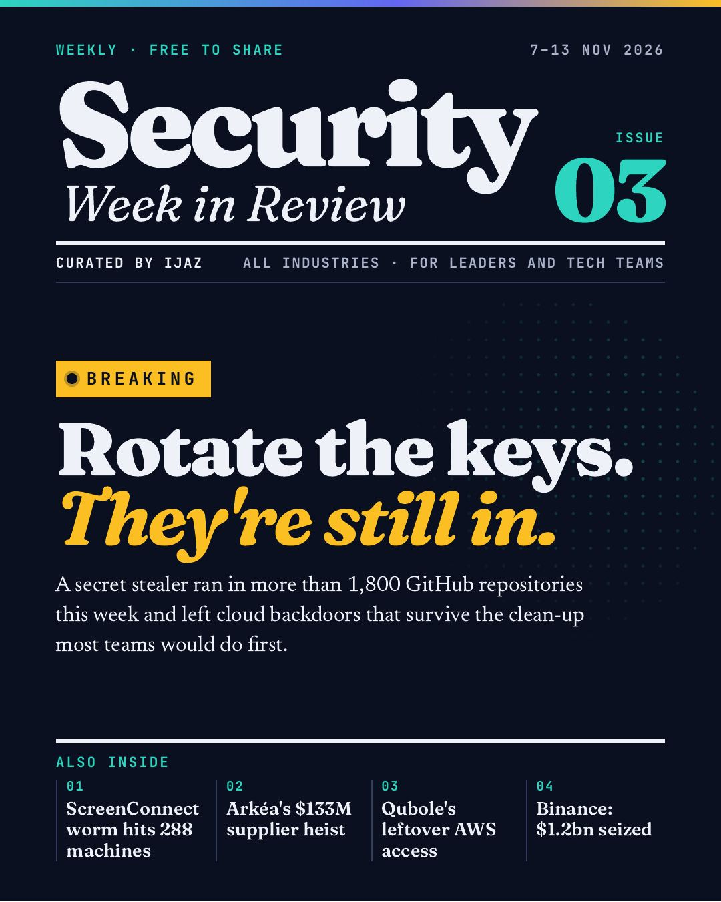
Read this page as text
WEEKLY · FREE TO SHARE
7–13 NOV 2026
Security Week in Review 03 ISSUE
CURATED BY IJAZ
ALL INDUSTRIES · FOR LEADERS AND TECH TEAMS
BREAKING
Rotate the keys. They're still in. A secret stealer ran in more than 1,800 GitHub repositories this week and left cloud backdoors that survive the clean-up most teams would do first.
ALSO INSIDE 01
ScreenConnect worm hits 288 machines
Arkéa's $133M supplier heist
Qubole's leftover AWS access
Binance: $1.2bn seized
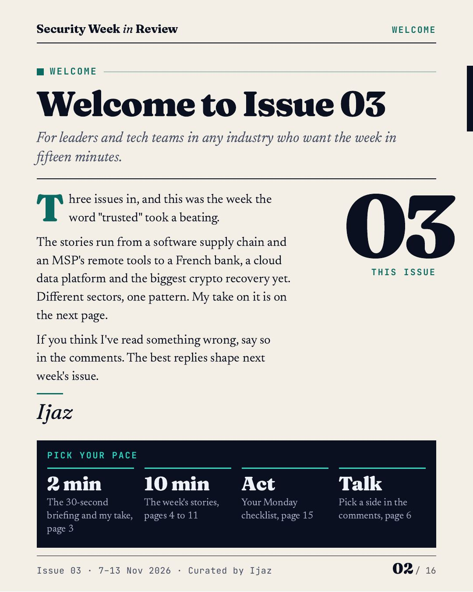
Read this page as text
Security Week in Review
WELCOME
WELCOME
Welcome to Issue 03
For leaders and tech teams in any industry who want the week in fifteen minutes.
T
hree issues in, and this was the week the word "trusted" took a beating.
The stories run from a software supply chain and an MSP's remote tools to a French bank, a cloud data platform and the biggest crypto recovery yet. Different sectors, one pattern. My take on it is on the next page.
03 THIS ISSUE
If you think I've read something wrong, say so in the comments. The best replies shape next week's issue.
Ijaz PICK YOUR PACE
2 min
The 30-second briefing and my take, page 3
10 min
The week's stories, pages 4 to 11
Act
Your Monday checklist, page 15
Issue 03 · 7–13 Nov 2026 · Curated by Ijaz
Talk
Pick a side in the comments, page 6
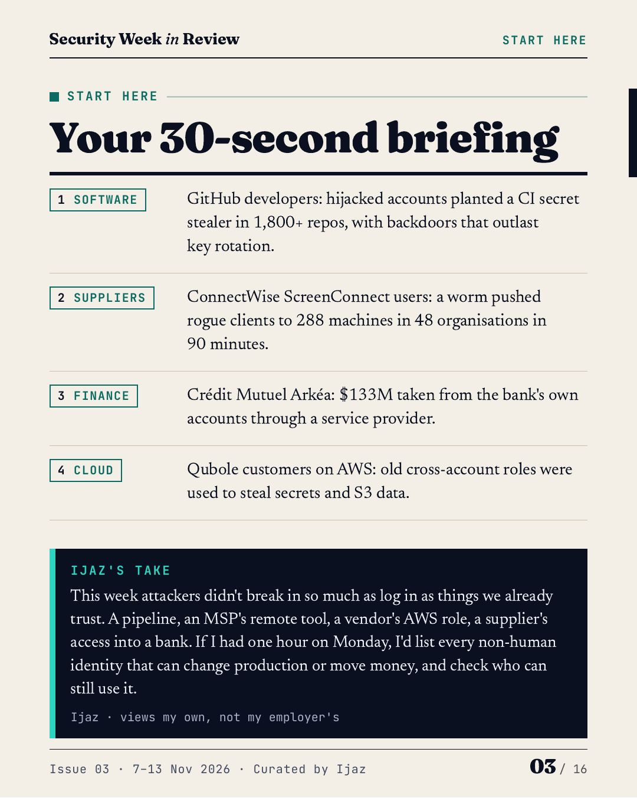
Read this page as text
Security Week in Review
START HERE
START HERE
Your 30-second briefing 1 SOFTWARE
GitHub developers: hijacked accounts planted a CI secret stealer in 1,800+ repos, with backdoors that outlast key rotation.
2 SUPPLIERS
ConnectWise ScreenConnect users: a worm pushed rogue clients to 288 machines in 48 organisations in 90 minutes.
3 FINANCE
Crédit Mutuel Arkéa: $133M taken from the bank's own accounts through a service provider.
4 CLOUD
Qubole customers on AWS: old cross-account roles were used to steal secrets and S3 data.
IJAZ'S TAKE
This week attackers didn't break in so much as log in as things we already trust. A pipeline, an MSP's remote tool, a vendor's AWS role, a supplier's access into a bank. If I had one hour on Monday, I'd list every non-human identity that can change production or move money, and check who can still use it. Ijaz · views my own, not my employer's
Issue 03 · 7–13 Nov 2026 · Curated by Ijaz
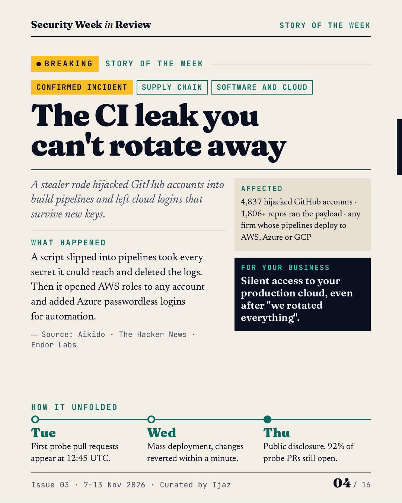
Read this page as text
Security Week in Review
BREAKING
STORY OF THE WEEK
STORY OF THE WEEK
CONFIRMED INCIDENT
SUPPLY CHAIN
SOFTWARE AND CLOUD
The CI leak you can't rotate away A stealer rode hijacked GitHub accounts into build pipelines and left cloud logins that survive new keys. WHAT HAPPENED
A script slipped into pipelines took every secret it could reach and deleted the logs. Then it opened AWS roles to any account and added Azure passwordless logins for automation.
AFFECTED
4,837 hijacked GitHub accounts · 1,806+ repos ran the payload · any firm whose pipelines deploy to AWS, Azure or GCP FOR YOUR BUSINESS
Silent access to your production cloud, even after "we rotated everything".
Source: Aikido · The Hacker News · Endor Labs
HOW IT UNFOLDED
Tue
First probe pull requests appear at 12:45 UTC.
Wed
Mass deployment, changes reverted within a minute.
Issue 03 · 7–13 Nov 2026 · Curated by Ijaz
Thu
Public disclosure. 92% of probe PRs still open.
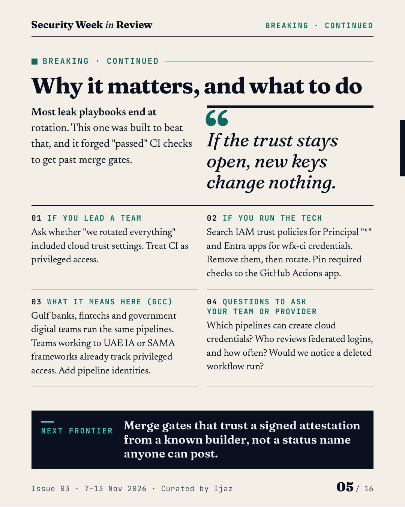
Read this page as text
Security Week in Review
BREAKING · CONTINUED
BREAKING · CONTINUED
Why it matters, and what to do Most leak playbooks end at rotation. This one was built to beat that, and it forged "passed" CI checks to get past merge gates.
“ If the trust stays
01 IF YOU LEAD A TEAM
02 IF YOU RUN THE TECH
Ask whether "we rotated everything" included cloud trust settings. Treat CI as privileged access.
Search IAM trust policies for Principal "*" and Entra apps for wfx-ci credentials. Remove them, then rotate. Pin required checks to the GitHub Actions app.
03 WHAT IT MEANS HERE ( GCC)
04 QUESTIONS TO ASK YOUR TEAM OR PROVIDER
Gulf banks, fintechs and government digital teams run the same pipelines. Teams working to UAE IA or SAMA frameworks already track privileged access. Add pipeline identities.
NEXT FRONTIER
open, new keys change nothing.
Which pipelines can create cloud credentials? Who reviews federated logins, and how often? Would we notice a deleted workflow run?
Merge gates that trust a signed attestation from a known builder, not a status name anyone can post.
Issue 03 · 7–13 Nov 2026 · Curated by Ijaz
Read this page as text
Security Week in Review
PICK A SIDE
PICK A SIDE · STORY OF THE WEEK
Where do you land? Tell me in the comments. THE SITUATION
Your CI pipeline has just leaked its secrets. Do you rotate everything in the first hour, or hunt for backdoors first?
A
Rotate now Stolen keys die fast and the business sees action. But you may tip off the attacker and miss the backdoors they planted.
B vs
Hunt, then rotate You find trust changes and federated logins before resetting. But stolen keys stay live for hours while you look.
Or tell us how your team handled something similar. Leaders and tech folks both welcome. UPDATE SINCE LAST ISSUE
Issue 02's top story has a name attached. France has formally blamed Shahid Kaveh, a unit linked to Iran's Revolutionary Guard, for October's sabotage of about 700 supermarket fridges. Your comment could be here next Friday. Source: SecurityWeek · Cybersecurity Today
Issue 03 · 7–13 Nov 2026 · Curated by Ijaz
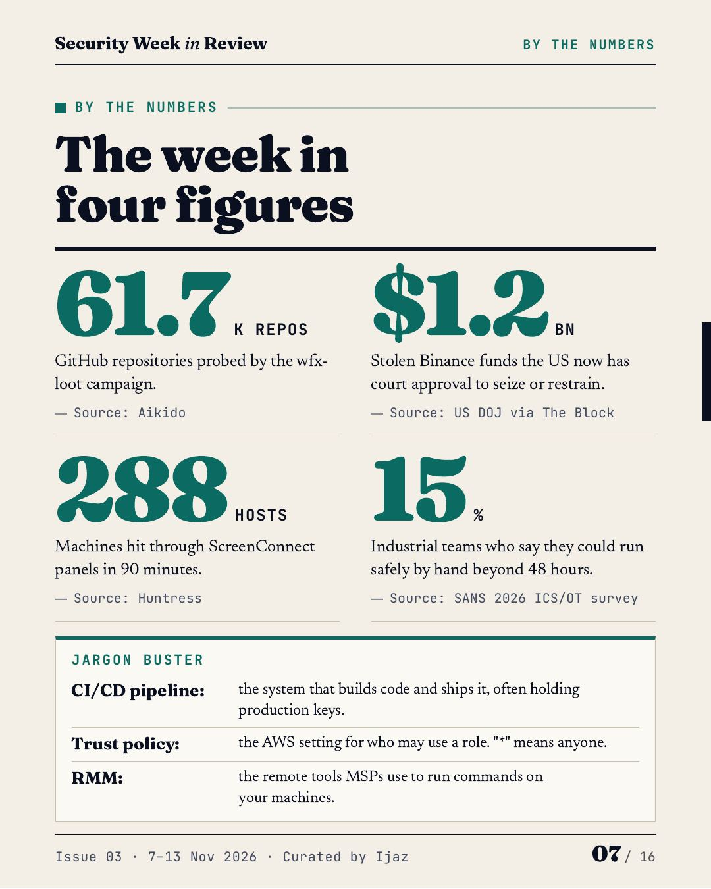
Read this page as text
Security Week in Review
BY THE NUMBERS
BY THE NUMBERS
The week in four figures
61.7
K REPOS
GitHub repositories probed by the wfxloot campaign. Source: Aikido
BN
Stolen Binance funds the US now has court approval to seize or restrain. Source: US DOJ via The Block
HOSTS
Machines hit through ScreenConnect panels in 90 minutes. Source: Huntress
$1.2 15
%
Industrial teams who say they could run safely by hand beyond 48 hours. Source: SANS 2026 ICS/OT survey
JARGON BUSTER
CI/CD pipeline:
the system that builds code and ships it, often holding production keys.
Trust policy:
the AWS setting for who may use a role. "*" means anyone.
RMM:
the remote tools MSPs use to run commands on your machines.
Issue 03 · 7–13 Nov 2026 · Curated by Ijaz
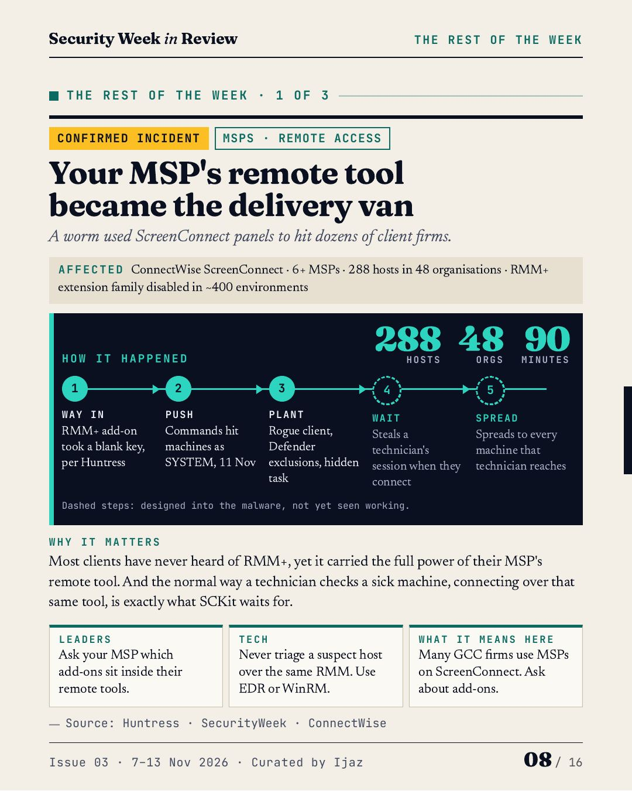
Read this page as text
Security Week in Review
THE REST OF THE WEEK
THE REST OF THE WEEK · 1 OF 3 CONFIRMED INCIDENT
MSPS · REMOTE ACCESS
Your MSP's remote tool became the delivery van
A worm used ScreenConnect panels to hit dozens of client firms. A F F E C T E D ConnectWise ScreenConnect · 6+ MSPs · 288 hosts in 48 organisations · RMM+
extension family disabled in ~400 environments
HOW IT HAPPENED
HOSTS
ORGS
MINUTES
WAY IN
PUSH
PLANT
RMM+ add-on took a blank key, per Huntress
Commands hit machines as SYSTEM, 11 Nov
Rogue client, Defender exclusions, hidden task
WAIT
SPREAD
Steals a technician's session when they connect
Spreads to every machine that technician reaches
Dashed steps: designed into the malware, not yet seen working.
WHY IT MATTERS
Most clients have never heard of RMM+, yet it carried the full power of their MSP's remote tool. And the normal way a technician checks a sick machine, connecting over that same tool, is exactly what SCKit waits for. LEADERS
TECH
WHAT IT MEANS HERE
Ask your MSP which add-ons sit inside their remote tools.
Never triage a suspect host over the same RMM. Use EDR or WinRM.
Many GCC firms use MSPs on ScreenConnect. Ask about add-ons.
Source: Huntress · SecurityWeek · ConnectWise Issue 03 · 7–13 Nov 2026 · Curated by Ijaz
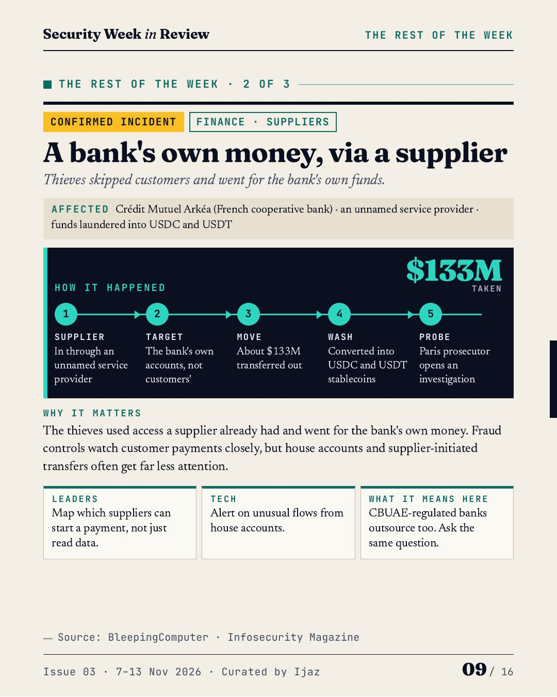
Read this page as text
Security Week in Review
THE REST OF THE WEEK
THE REST OF THE WEEK · 2 OF 3 CONFIRMED INCIDENT
FINANCE · SUPPLIERS
A bank's own money, via a supplier Thieves skipped customers and went for the bank's own funds.
A F F E C T E D Crédit Mutuel Arkéa (French cooperative bank) · an unnamed service provider ·
funds laundered into USDC and USDT
$133M
HOW IT HAPPENED
TAKEN
SUPPLIER
TARGET
MOVE
WASH
PROBE
In through an unnamed service provider
The bank's own accounts, not customers'
About $133M transferred out
Converted into USDC and USDT stablecoins
Paris prosecutor opens an investigation
WHY IT MATTERS
The thieves used access a supplier already had and went for the bank's own money. Fraud controls watch customer payments closely, but house accounts and supplier-initiated transfers often get far less attention. LEADERS
TECH
WHAT IT MEANS HERE
Map which suppliers can start a payment, not just read data.
Alert on unusual flows from house accounts.
CBUAE-regulated banks outsource too. Ask the same question.
Source: BleepingComputer · Infosecurity Magazine Issue 03 · 7–13 Nov 2026 · Curated by Ijaz
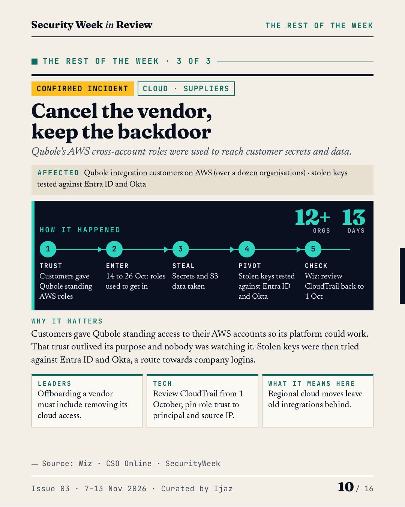
Read this page as text
Security Week in Review
THE REST OF THE WEEK
THE REST OF THE WEEK · 3 OF 3 CONFIRMED INCIDENT
CLOUD · SUPPLIERS
Cancel the vendor, keep the backdoor
Qubole's AWS cross-account roles were used to reach customer secrets and data. A F F E C T E D Qubole integration customers on AWS (over a dozen organisations) · stolen keys
tested against Entra ID and Okta
12+ 13
HOW IT HAPPENED
ORGS
DAYS
TRUST
ENTER
STEAL
PIVOT
CHECK
Customers gave Qubole standing AWS roles
14 to 26 Oct: roles Secrets and S3 used to get in data taken
Stolen keys tested against Entra ID and Okta
Wiz: review CloudTrail back to 1 Oct
WHY IT MATTERS
Customers gave Qubole standing access to their AWS accounts so its platform could work. That trust outlived its purpose and nobody was watching it. Stolen keys were then tried against Entra ID and Okta, a route towards company logins. LEADERS
TECH
WHAT IT MEANS HERE
Offboarding a vendor must include removing its cloud access.
Review CloudTrail from 1 October, pin role trust to principal and source IP.
Regional cloud moves leave old integrations behind.
Source: Wiz · CSO Online · SecurityWeek Issue 03 · 7–13 Nov 2026 · Curated by Ijaz
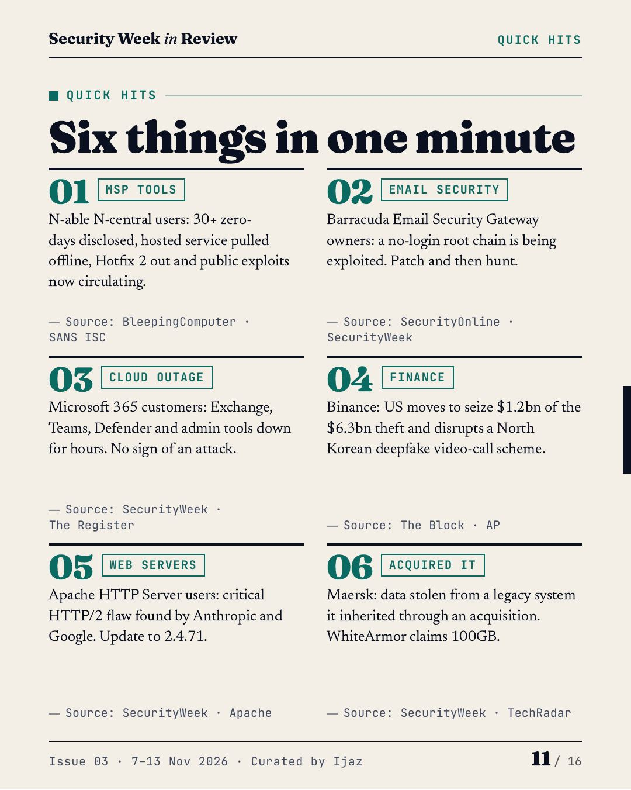
Read this page as text
Security Week in Review
QUICK HITS
QUICK HITS
Six things in one minute 01
MSP TOOLS
N-able N-central users: 30+ zerodays disclosed, hosted service pulled offline, Hotfix 2 out and public exploits now circulating.
EMAIL SECURITY
Barracuda Email Security Gateway owners: a no-login root chain is being exploited. Patch and then hunt.
Source: BleepingComputer · SANS ISC
Source: SecurityOnline · SecurityWeek
CLOUD OUTAGE
Microsoft 365 customers: Exchange, Teams, Defender and admin tools down for hours. No sign of an attack.
Source: SecurityWeek · The Register
WEB SERVERS
Apache HTTP Server users: critical HTTP/2 flaw found by Anthropic and Google. Update to 2.4.71.
Source: SecurityWeek · Apache
FINANCE
Binance: US moves to seize $1.2bn of the $6.3bn theft and disrupts a North Korean deepfake video-call scheme.
Source: The Block · AP
ACQUIRED IT
Maersk: data stolen from a legacy system it inherited through an acquisition. WhiteArmor claims 100GB.
Source: SecurityWeek · TechRadar
Issue 03 · 7–13 Nov 2026 · Curated by Ijaz
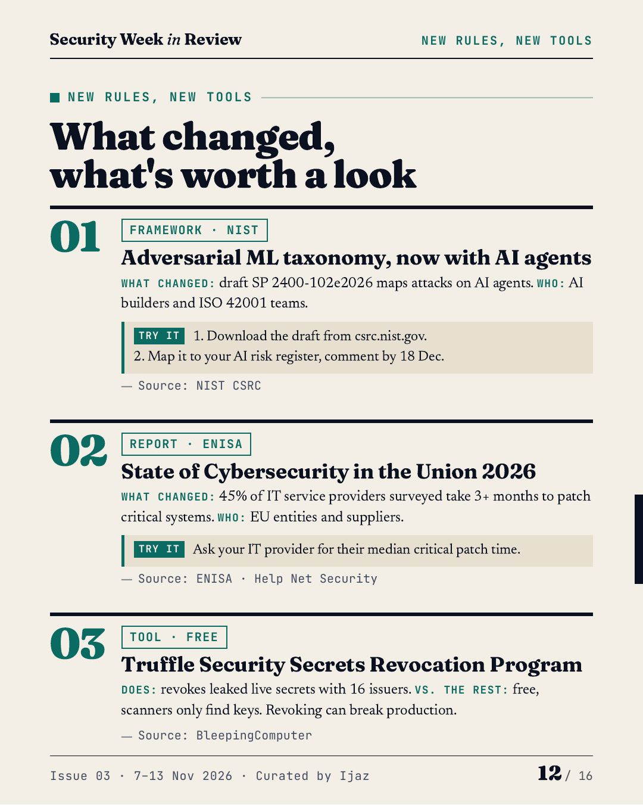
Read this page as text
Security Week in Review
NEW RULES, NEW TOOLS
NEW RULES, NEW TOOLS
What changed, what's worth a look
01 Adversarial ML taxonomy, now with AI agents FRAMEWORK · NIST
WHAT CHANGED: draft SP 2400-102e2026 maps attacks on AI agents. WHO: AI
builders and ISO 42001 teams. 1. Download the draft from csrc.nist.gov. 2. Map it to your AI risk register, comment by 18 Dec. TRY IT
Source: NIST CSRC
02 State of Cybersecurity in the Union 2026 REPORT · ENISA
WHAT CHANGED: 45% of IT service providers surveyed take 3+ months to patch
critical systems. WHO: EU entities and suppliers. TRY IT
Ask your IT provider for their median critical patch time.
Source: ENISA · Help Net Security
03 Truffle Security Secrets Revocation Program TOOL · FREE
DOES: revokes leaked live secrets with 16 issuers. VS. THE REST: free,
scanners only find keys. Revoking can break production. Source: BleepingComputer Issue 03 · 7–13 Nov 2026 · Curated by Ijaz
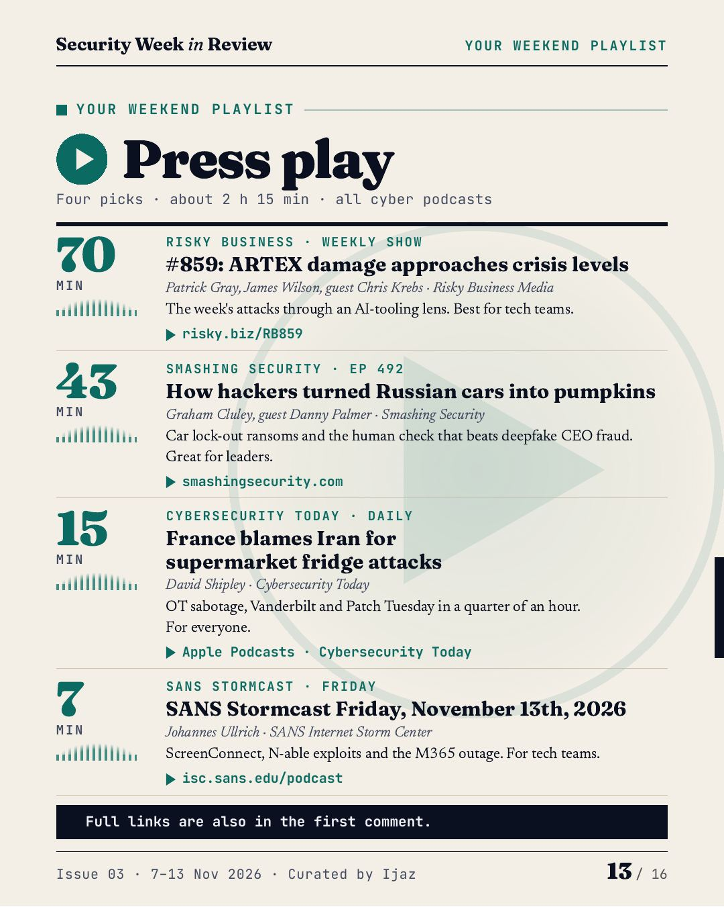
Read this page as text
Security Week in Review
YOUR WEEKEND PLAYLIST
YOUR WEEKEND PLAYLIST
Press play
Four picks · about 2 h 15 min · all cyber podcasts
70 MIN
RISKY BUSINESS · WEEKLY SHOW
#859: ARTEX damage approaches crisis levels Patrick Gray, James Wilson, guest Chris Krebs · Risky Business Media The week's attacks through an AI-tooling lens. Best for tech teams. risky.biz/RB859
43 MIN
SMASHING SECURITY · EP 492
How hackers turned Russian cars into pumpkins Graham Cluley, guest Danny Palmer · Smashing Security Car lock-out ransoms and the human check that beats deepfake CEO fraud. Great for leaders. smashingsecurity.com
15 MIN
CYBERSECURITY TODAY · DAILY
France blames Iran for supermarket fridge attacks
David Shipley · Cybersecurity Today OT sabotage, Vanderbilt and Patch Tuesday in a quarter of an hour. For everyone. Apple Podcasts · Cybersecurity Today
7 MIN
SANS STORMCAST · FRIDAY
SANS Stormcast Friday, November 13th, 2026 Johannes Ullrich · SANS Internet Storm Center ScreenConnect, N-able exploits and the M365 outage. For tech teams. isc.sans.edu/podcast
Full links are also in the first comment. Issue 03 · 7–13 Nov 2026 · Curated by Ijaz
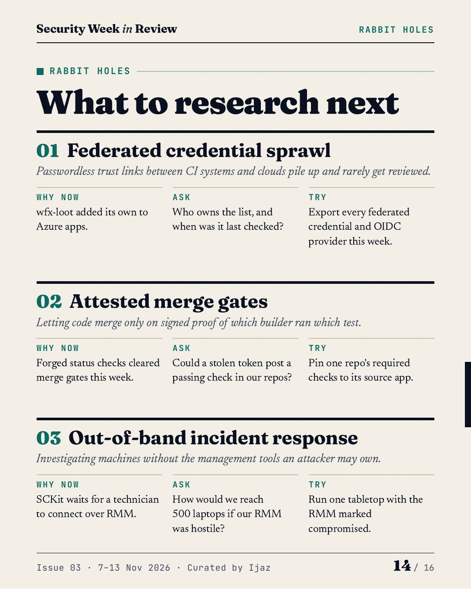
Read this page as text
Security Week in Review
RABBIT HOLES
RABBIT HOLES
What to research next 01 Federated credential sprawl
Passwordless trust links between CI systems and clouds pile up and rarely get reviewed. WHY NOW
ASK
TRY
wfx-loot added its own to Azure apps.
Who owns the list, and when was it last checked?
Export every federated credential and OIDC provider this week.
02 Attested merge gates
Letting code merge only on signed proof of which builder ran which test. WHY NOW
ASK
TRY
Forged status checks cleared merge gates this week.
Could a stolen token post a passing check in our repos?
Pin one repo's required checks to its source app.
03 Out-of-band incident response
Investigating machines without the management tools an attacker may own. WHY NOW
ASK
TRY
SCKit waits for a technician to connect over RMM.
How would we reach 500 laptops if our RMM was hostile?
Run one tabletop with the RMM marked compromised.
Issue 03 · 7–13 Nov 2026 · Curated by Ijaz
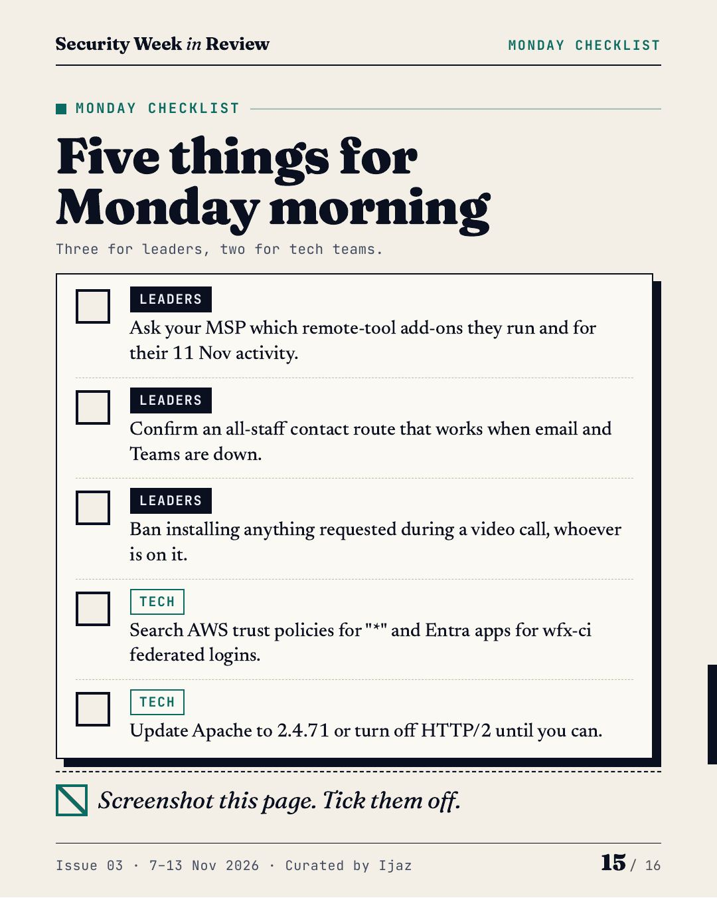
Read this page as text
Security Week in Review
MONDAY CHECKLIST
MONDAY CHECKLIST
Five things for Monday morning Three for leaders, two for tech teams. LEADERS
Ask your MSP which remote-tool add-ons they run and for their 11 Nov activity. LEADERS
Confirm an all-staff contact route that works when email and Teams are down. LEADERS
Ban installing anything requested during a video call, whoever is on it. TECH
Search AWS trust policies for "*" and Entra apps for wfx-ci federated logins. TECH
Update Apache to 2.4.71 or turn off HTTP/2 until you can.
Screenshot this page. Tick them off. Issue 03 · 7–13 Nov 2026 · Curated by Ijaz
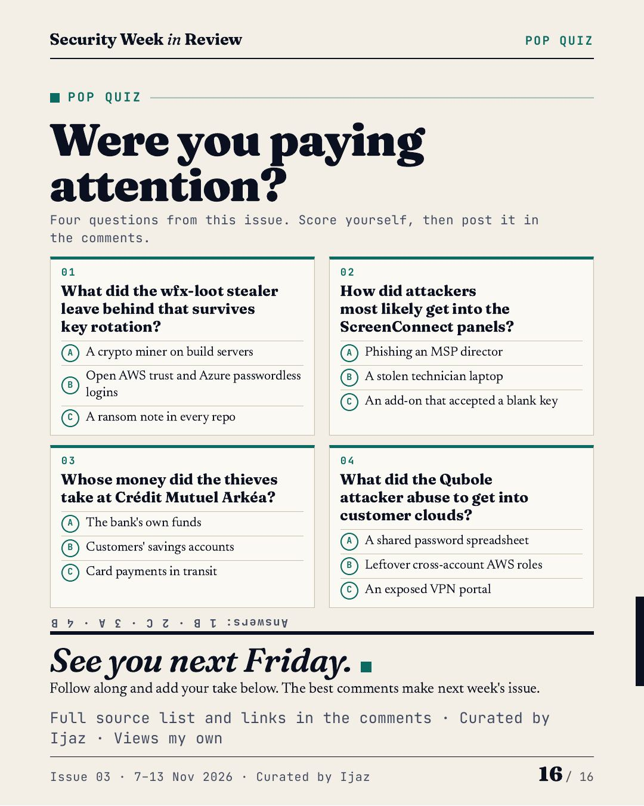
Read this page as text
Security Week in Review
POP QUIZ
POP QUIZ
Were you paying attention?
Four questions from this issue. Score yourself, then post it in the comments. 01
What did the wfx-loot stealer leave behind that survives key rotation?
How did attackers most likely get into the ScreenConnect panels?
A
A crypto miner on build servers
A
Phishing an MSP director
B
Open AWS trust and Azure passwordless logins
B
A stolen technician laptop
C
An add-on that accepted a blank key
C
A ransom note in every repo
Whose money did the thieves take at Crédit Mutuel Arkéa?
What did the Qubole attacker abuse to get into customer clouds?
A
The bank's own funds
B
Customers' savings accounts
A
A shared password spreadsheet
C
Card payments in transit
B
Leftover cross-account AWS roles
C
An exposed VPN portal
Answers: 1 B · 2 C · 3 A · 4 B
See you next Friday.
Follow along and add your take below. The best comments make next week's issue. Full source list and links in the comments · Curated by Ijaz · Views my own Issue 03 · 7–13 Nov 2026 · Curated by Ijaz